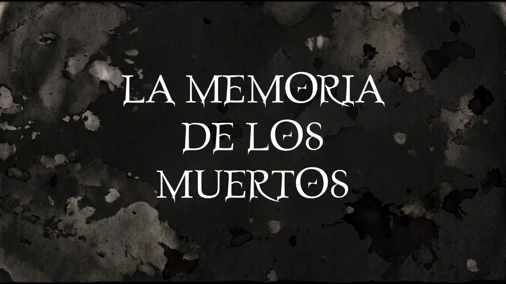
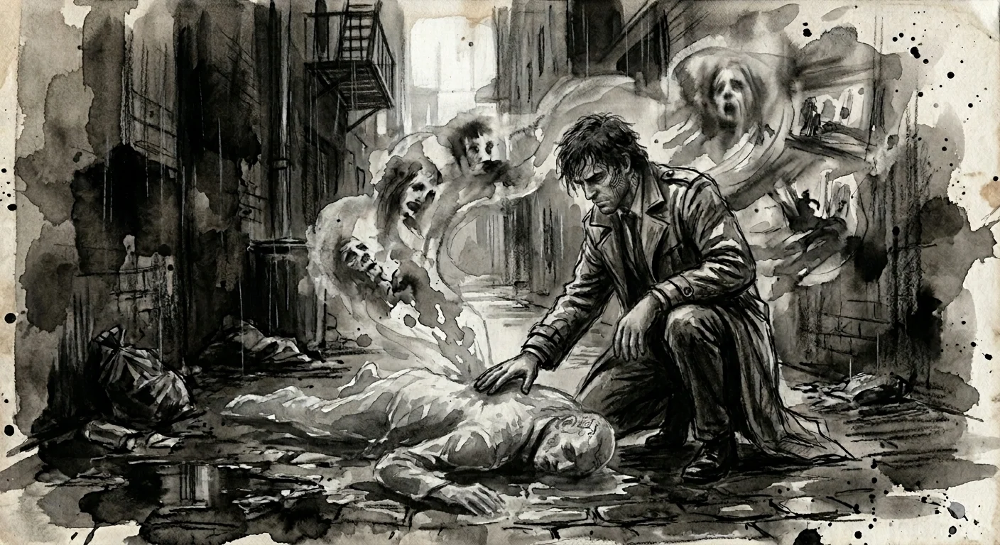

En el horno
La memoria de los muertos
Juego narrativo de investigación en un futuro poslovecraftiano
Sinopsis
Son tiempos oscuros. Los Primigenios despertaron para cumplir su destino y después se inmolaron, dejando tras de sí un mundo huérfano de dioses y demonios. Pero los cultistas habían malinterpretado las antiguas profecías: el caos no trajo el fin de la civilización, sino su metamorfosis.
La realidad anda desencajada. Los hombres se afanan por imponer orden a la entropía mediante máquinas y sacrificios, mientras la materia alienígena se funde con las metrópolis en una amalgama tentacular que alimenta la locura. Corporaciones y sacerdotes pugnan por parasitar lo cósmico y esquilmar los remanentes primordiales. Los titánicos cadáveres de los dioses adornan los desiertos de Asia Menor. Ciberpsíquicos recorren las urbes junto a bandas ensambladas en implantes, y los Velados, mutantes marcados por el contacto directo con lo innombrable, sobreviven repudiados en el gueto de Nueva Arkham.
Jax Havoc, detective y Velado, posee la facultad de adentrarse en la memoria de los muertos y revivir sus últimos instantes. La policía corrupta lo ha arrancado del gueto y le concede ciertas libertades a cambio de sus servicios. Pero cuando un fantasma del pasado regresa para reclamar su deuda, Jax se ve arrastrado hacia una conspiración que apunta a lo más alto. Y al invadir los recuerdos equivocados, descubrirá verdades tan desgarradoras que podrían alterar para siempre el destino de la humanidad.
Las mecánicas del juego
El libro se organiza en capítulos divididos en tres tipos de escenas:
- Ilustración con elementos interactivos: Una escena situacional donde el objetivo principal del jugador suele ser localizar un cadáver.
- Tablero de incursión: Una vez que Jax, nuestro protagonista, invade la memoria del fallecido, se despliega un tablero de teselas que representa su inmersión en los recuerdos traumáticos. El jugador deberá resolver el escenario gestionando una serie de recursos bajo la presión de un contador de tiempo.
- Combate táctico con cartas: Si Jax se ve obligado a luchar, se activa esta tercera escena, la cual se resuelve mediante cartas integradas en las propias páginas del libro. Por lo general, esta escena es evitable mediante diplomacia, sigilo o investigación.
Exploración y narrativa ramificada: Adicionalmente a esta estructura, la obra incorpora un mapa de mundo abierto con múltiples localizaciones desbloqueables y una trama ramificada con objetivos opcionales. Las consecuencias de las decisiones del jugador, nunca fáciles, a menudo no se advertirán hasta mucho tiempo después.
Tráiler
TráilerVer en YouTube ↗